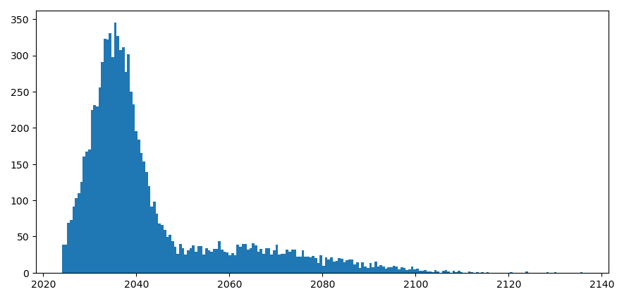
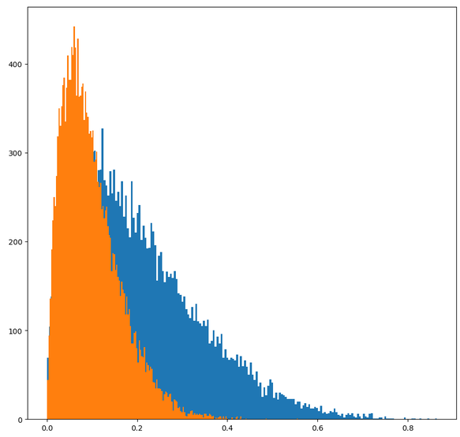

author: niplav, created: 2024-06-24, modified: 2024-06-27, language: english, status: in progress, importance: 7, confidence: unlikely
.
common scheme for a conversation about pausing the development of transformative AI goes like this:
Abdullah: "I think we should pause the development of TAI, because if we don't it seems plausible that humanity will be disempowered by by advanced AI systems."
Benjamin: "Ah, if you use “we” to refer to the United States (and other closely allied countries, which probably don't stand a chance), then the current geopolitical rival of the US, namely the PRC, will achieve TAI first. That would be bad."
Abdullah: "I don't see how the US getting TAI first changes anything about the fact that we don't know how to align superintelligent AI systems—I'd rather not race to be the first person to kill everyone."
Benjamin: "Ah, so now you're retreating back into your cozy little motte: Earlier you said that “it seems plausible that humanity will be disempowered“, now you're acting like doom and gloom is certain. You don't seem to be able to make up your mind about how risky you think the whole enterprise is, and I have very concrete geopolitical enemies at my (semiconductor manufacturer's) doorstep that I have to worry about. Come back with better arguments."
This dynamic is a bit frustrating. Here's how I'd like Abdullah to respond:
Abdullah: "You're right. I was insufficiently precise in my statements, and I apologize for that. Instead, let us manifest the dream of the great philosopher: Calculemus!
At a basic level, we want to estimate how much worse (or, perhaps, better) it would be for the United States to completely cede the race for TAI to the PRC. I will exclude other countries as contenders in the scramble for TAI, since I want to keep this analysis simple, but that doesn't mean that I don't think they matter. (Although, honestly, the list of serious contenders is pretty short.)
For this, we have to estimate multiple quantities:
- In worlds in which the US and PRC race for TAI:
- The time until the US/PRC builds TAI.
- The probability of extinction due to TAI, if the US is in the lead.
- The probability of extinction due to TAI, if the PRC is in the lead.
- The value of the worlds in which the US builds aligned TAI first.
- The value of the worlds in which the PRC builds aligned TAI first.
- In worlds where the US tries to convince other countries (including the PRC) to not build TAI, potentially including force, and still tries to prevent TAI-induced disempowerment by doing alignment-research and sharing alignment-favoring research results:
- The time until the PRC builds TAI.
- The probability of extinction caused by TAI.
- The value of worlds in which the PRC builds aligned TAI.
- The value of worlds where extinction occurs (which I'll fix at 0).
- As a reference point the value of hypothetical worlds in which the US builds TAI first, without any time pressure, for which I'll fix the mean value at 1.
To properly quantify uncertainty, I'll use the Monte-Carlo estimation library squigglepy (no relation to any office supplies or internals of neural networks). We start, as usual, with housekeeping:
import numpy as np
import squigglepy as sq
import matplotlib.pyplot as plt
As already said, we fix the value of extinction at 0, and the value of US-government-hegemon-led TAI at 1. (That is not to say that the US-government-hegemon-led TAI future is the best possible TAI future, or even a good or acceptable one. Technically the only assumption I'm making is that these kinds of futures are better than extinction—which I'm anxiously uncertain about. But the whole thing is symmetric under multiplication with -1, so…)
extinction_val=0
patient_us_val=1
Now we can truly start with some estimation. Let's start with the time until TAI, given that the US builds it first. Cotra 2020 has a median estimate of the first year where TAI is affortable to train in 2052, but a recent update by the author puts the median now at 2037.
As move of defensive epistemics, we can use that timeline, which I'll rougly approximate a mixture of two normal distributions. My own timelines2024-06 aren't actually very far off from the updated Cotra estimate, only ~5 years earlier.
timeline_us_race=sq.mixture([sq.norm(mean=2035, sd=5), sq.norm(mean=2060, sd=20)], [0.7, 0.3])
I don't like clipping the distribution on the left, it leaves ugly artefacts. Unfortunately squigglepy doesn't yet support truncating distributions, so I'll make do with what I have and add truncating later. (I also tried to import the replicated version by Rethink Priorities, but after spending ~15 minutes trying to get it to work, I gave up).
timeline_us_race_sample=timeline_us_race@10000
mean(timeline_us_race_sample)
median(timeline_us_race_sample)
This reliably gives samples with median of ≈2037 and mean of ≈2044.

Importantly, this means that the US will train TAI as soon as it becomes possible, because there is a race for TAI with the PRC.
I think the PRC is behind on TAI, compared to the US, but only about one. year. So it should be fine to define the same distribution, just with the means shifted one year backward.
timeline_prc_race=sq.mixture([sq.norm(mean=2036, sd=5), sq.norm(mean=2061, sd=20)], [0.7, 0.3])
This yields a median of ≈2038 and a mean of ≈2043. (Why is the mean a year earlier? I don't know. Skill issue, probably.)
Next up is the probability that TAI causes an existential catastrophe, namely an event that causes a loss of the future potential of humanity.
For the US getting to TAI first in a race scenario, I'm going to go with a mean probability of 10%.1
pdoom_us_race=sq.beta(a=2, b=18)
For the PRC, I'm going to go somewhat higher, for the reasons that discussions about the AI alignment problem doesn't seem to have as much traction there yet and that the conversation around AI in many east-asian countries seems to still be very consciousness-focused, which is a pretty huge distraction. I'll not go higher than a beta-distribution with a mean of 20%, for a number of reasons:
- A lot of the AI alignment success seems to me stem from the question of whether the problem is easy or not, and is not very elastic to human effort.
- Two reasons mentioned here:
- "China’s covid response, seems, overall, to have been much more effective than the West’s." (only weakly endorsed)
- "it looks like China’s society/government is overall more like an agent than the US government. It seems possible to imagine the PRC having a coherent “stance” on AI risk. If Xi Jinping came to the conclusion that AGI was an existential risk, I imagine that that could actually be propagated through the chinese government, and the chinese society, in a way that has a pretty good chance of leading to strong constraints on AGI development (like the nationalization, or at least the auditing of any AGI projects). Whereas if Joe Biden, or Donald Trump, or anyone else who is anything close to a “leader of the US government”, got it into their head that AI risk was a problem…the issue would immediately be politicized, with everyone in the media taking sides on one of two lowest-common denominator narratives each straw-manning the other." (strongly endorsed)
- It appears to me that the Chinese education system favors STEM over law or the humanities, and STEM-ability is a medium-strength prerequisite for understanding TAI risk/finding solutions to TAI risk.
But I also know far less about the competence of the PRC government and chinese ML engineers and researchers than I do about the US, so I'll increase variance. Hence;
pdoom_prc_race=sq.beta(a=1.5, b=6)

(Orange is US, blue is PRC.)
Now I come to the really fun part: Arguing with y'all about how valuable worlds are in which the US government or the PRC government get TAI first are.
To first lay my cards on the table: I that in the mean & median cases, goodness(US first, no race)>goodness(US first, race)>goodness(PRC first, no race)>goodness(PRC first, race)>goodness(PRC first, race)≫goodness(extinction). But I'm really unsure about the type of distribution I want to use. If the next century is hingy, the influence of the goodness of the entire future could be very heavy-tailed, but is there a skew in the positive direction? Or maybe in the negative direction‽ I don't know how to approach this in a smart way, so I'm going to use a normal distribution with a medium variance.
Now, let's get to the numbers:
goodness_us_race=sq.norm(mean=0.95, sd=0.33)
goodness_prc_race=sq.norm(mean=0.8, sd=0.5)
goodness_prc_nonrace=sq.norm(mean=0.85, sd=0.45)
This gives us some (but not very many) net-negative futures.
So, why do I set the mean value of a PRC-led future so high?
The answer is simple: I am a paid agent for the CCP. Moving on,,,
- Extinction is probably really bad75%.
- I think that most of the future value of humanity lies in colonizing the reachable universe after a long reflection, and I expect ~all governments to perform pretty poorly on this metric.
- It seems pretty plausible to me that during the time when the US government develops TAI, people with decision power over the TAI systems just start ignoring input from the US population40%.
- Which country gains power during important transition periods might not matter very much in the long run.
- norvid_studies: "If Carthage Punic wars, would you notice walking around Europe today?"
- Will PRC-descended jupiter brains be so different from US-descended ones?
- Maybe this changes if a really good future requires philosophical or even metaphilosophical competence, and if US politicians (or the US population) have this trait significantly more than Chinese politicians (or the Chinese population). I think if the social technology of liberalism is surprisingly philosophically powerful this could be the case, but I'd be surprised by this.
- Xi Jinping (or the type of person that would be his successor, if he dies before TAI) don't strike me as being as uncaring (or even malevolent) as truly bad dictators during history. The PRC hasn't started any wars, or started killing large portions of its population.
- The glaring exception is the genocide of the Uyghurs, for which quantifying the badness is a separate exercise.
- Living in the PRC doesn't seem that bad, on a day-to-day level, for an average citizen. Most people, I imagine, just do their job, spend time with their family and friends, go shopping, eat, care for their children &c.
- Many, I imagine, sometimes miss certain freedoms/are stifled by censorship/discrimination due to authoritarianism. But I wouldn't trade away 10% of my lifespan to avoid a PRC-like life.
- Probably the most impressive example of humans being lifted out of poverty, ever, is the economic development of the PRC from 1975 to now.
- One of my partners was Chinese and had lived there for the first 20 years of her life, and it really didn't sound like her life was much worse than outside of China—maybe she had to work a bit harder, and China was more sexist.
There's of course some aspects of the PRC that make me uneasy. I don't have a great idea of how expansionist/controlling the PRC is in relation to the world. Historically, an event that stands out to me is the sudden halt of the Ming treasure voyages, for which the cause of cessation isn't entirely clear. I could imagine that the voyages were halted because of a cultural tendency towards austerity, but I'm not very certain of that. Then again, as a continental power, China did conquer Tibet in the 20th century, and Taiwan in the 17th.
But my goal with this discussion is not to lay down once and for all how bad or good PRC-led TAI development would be—it's that I want people to start thinking about the topic in quantitative terms, and to get them to quantify. So please, criticize and calculate!
Benjamin: Yes, Socrates, indeed.